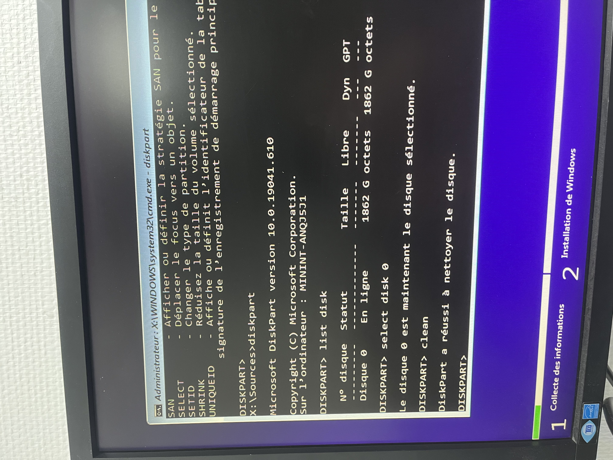
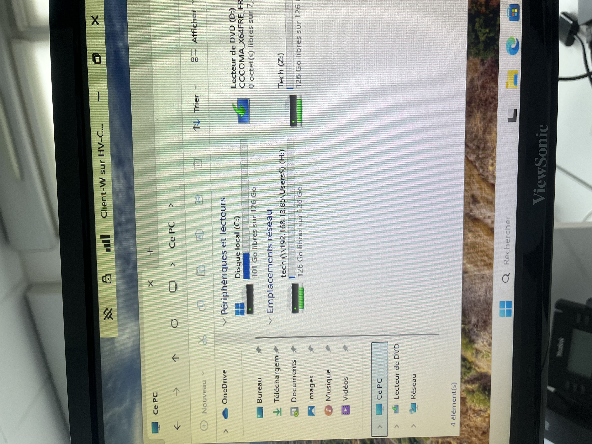

Dans le cadre de mon stage chez APE Conseil, j'ai participé au déploiement d'une trentaine de postes informatiques pour des clients variés, principalement des PME. L'objectif était de livrer des machines prêtes à l'emploi, configurées selon les besoins du client, en suivant une procédure standardisée en plusieurs étapes.
Boot PXE
Démarrage du PC sur le réseau pour lancer l'environnement de déploiement. Lorsque le boot PXE n'était pas activé par défaut, j'intervenais dans le BIOS/UEFI pour l'activer manuellement.
Partitionnement avec Diskpart
Suppression des partitions existantes via les commandes select disk et clean pour repartir sur une base propre. Certains disques n'apparaissaient pas dans Diskpart, ce qui nécessitait une activation dans le BIOS.

Installation de Windows 11 Pro
Déploiement du système d'exploitation via l'environnement PXE/WDS mis en place par l'entreprise.
Exécution du script PowerShell
Lancement d'un script d'automatisation complet qui configure entièrement la machine en une seule exécution :
- Suppression des bloatwares (Cortana, Xbox, applications tierces…)
- Configuration de Microsoft Edge avec Google comme moteur de recherche et page d'accueil par défaut
- Installation de Microsoft Office, Teams, Adobe Reader, 7-Zip, TeamViewer QuickSupport, PowerToys, Process Explorer, Everything Search
- Activation de Windows via la clé OEM présente dans le BIOS
- Renommage automatique du PC par son numéro de série BIOS
- Création d'un point de restauration système
- Création d'un compte utilisateur local administrateur
- Installation des outils constructeurs selon le fabricant (Dell Command Update, HP Image Assistant ou Lenovo System Update)

Sur certains PC, le boot PXE n'était pas activé par défaut. Il fallait accéder au BIOS/UEFI au démarrage pour l'activer manuellement avant de pouvoir lancer le déploiement réseau.
Sur certains modèles, le disque dur ou SSD n'apparaissait pas dans Diskpart. La solution consistait à activer le contrôleur de stockage dans les paramètres BIOS (passage de mode RAID/RST à AHCI ou activation du disque dans la configuration UEFI).
Lorsque le boot PXE ou le disque était inaccessible et que l'intervention BIOS s'avérait impossible, nous adoptions une solution de contournement : démarrer jusqu'au bureau Windows existant, se connecter au serveur FTP de l'entreprise, télécharger et exécuter le script directement. Cette approche permettait de conserver le bénéfice de l'automatisation même sans réinstallation complète du système.
- 1 ▸ Recenser et identifier les ressources numériques
- 3 ▸ Mettre en place et vérifier les niveaux d'habilitation
- 2 ▸ Traiter des demandes concernant les services réseau et système
- 1 ▸ Réaliser les tests d'intégration et d'acceptation
- 2 ▸ Déployer un service
- 3 ▸ Accompagner les utilisateurs
- 1 ▸ Mettre en place son environnement d'apprentissage